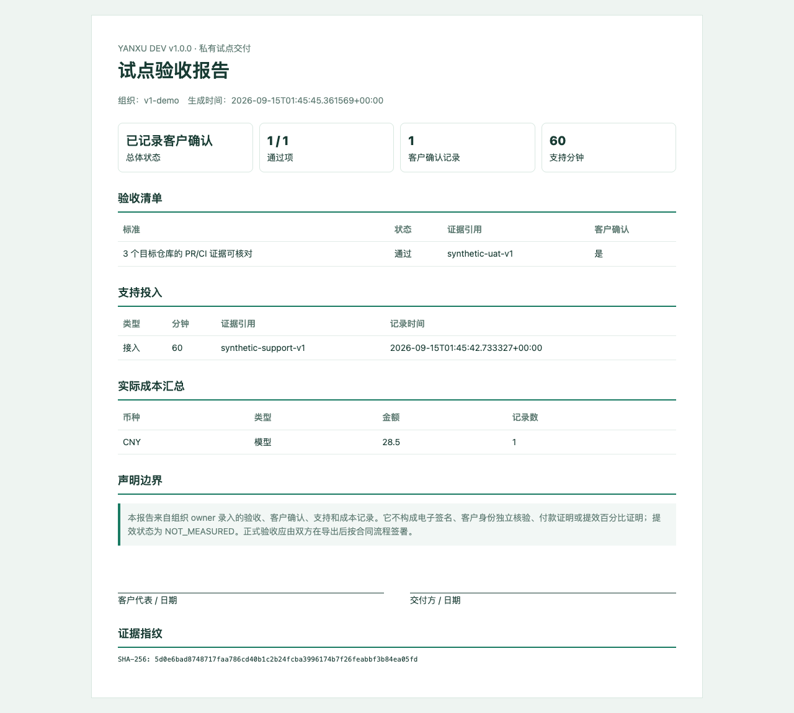

公开可安装
Release 提供跨平台 wheel 与脱敏自测验证 JSON；v1.0.0 留有 Chromium 截图。
核对 Release ↗merge 前验证“候选改动是否可以进入主分支”；merge 后验证“实际进入主分支的 commit 是否仍然成立”。研序把两次结果与代码版本绑定，旧报告不能替代新提交的检查。
系统只读取白名单上下文，固化目标、非目标、允许修改的文件和批准的测试命令。Policy 指纹让后续改动可以核对是否越界。
每个数字都有可打开的代码、CI 或 Release 依据。合成流程证明产品可运行，尚未替代外部客户的 UAT、付款和提效测量。
Release 提供跨平台 wheel 与脱敏自测验证 JSON；v1.0.0 留有 Chromium 截图。
核对 Release ↗PR 合并前与 main 合并后均通过 Linux、Windows 和 PostgreSQL 检查。
核对 main CI ↗试点 ZIP 与打印验收报告带内容指纹，便于发现导出内容变化。
阅读验证边界 →
Pilot acceptance
负责人记录验收标准、PASS/FAIL 证据、客户确认引用、支持分钟和实际成本。报告提供打印签字栏，同时明确它不是电子签名、付款证明或提效百分比证明。
SCREENSHOT SHA-256
5cc093d6803f7663ba8f990cdf0a947dfd993d92a44bdf70977339f7b4a45f4a
价格用于验证客户意愿，尚不代表已有成交。模型、CI、云资源和超出范围的定制按实际发生单独记录。
适合验证一个明确流程。
适合形成第一轮 ROI 证据。
适合复杂网络或流程适配。
商业验证边界：当前没有已公开的付费客户、收入或真实团队提效百分比。至少 5 个同范围且两侧质量通过的配对任务后，才计算人工时间减少率；样本不足继续显示 NOT_MEASURED。
研序复用成熟模型与执行器，把差异集中在团队规则、权限、版本证据、私有部署和效果验收。
Coding Agent / Superpowers
提供计划、实现、测试、调试和评审能力，解决“如何把代码写好”。
Yanxu Dev
限制范围、绑定 commit、核对 CI、保留审计并衡量试点结果，解决“团队如何安全验收”。